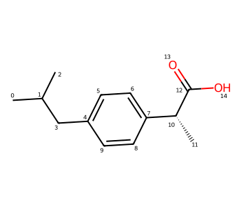
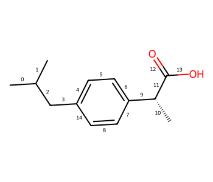

The RDKit supports a number of different fingerprinting algorithms and fingerprint types. For historical reasons (i.e. “bad decisions made a long time ago”) these are accessed via an inconsistent and confusing set of function names. Boran Adas, a student doing a Google Summer of Code project back in 2018, added a new API with a consistent interface for a number of the fingerprint types. I’ve mentioned this a few times and used it in some blog posts, but it has remained “underdocumented”. This blog post is an attempt to remedy that. Some of this content will end up in a future version of the RDKit docs.
2022.09.1
%pylab is deprecated, use %matplotlib inline and import the required libraries.
Populating the interactive namespace from numpy and matplotlib
Start by getting some molecules to work with
ms = [x for x in Chem.SmilesMolSupplier('../data/BLSets_selected_actives.txt') if x.GetProp('_Name')=='CHEMBL204']len(ms)
452
ms[0]
target_index
0
Generators and fingerprints
The idea of the new code is that all supported fingerprinting algorithms can be used the same way: you create a generator for that fingerprint algorithm with the appropriate parameters set and then ask the generator to give you the fingerprint type you want for each molecule.
Let’s look at how that works for Morgan fingerprints. When we create the generator we can optionally provide the radius and the size of the fingerprints to be generated:
Parameters specific to the individual fingerprint algorithms can be provided when creating the generator. We saw this above for the Morgan fingerprint, here’s an example of changing the max path length used for the RDKit FP:
The default RDKit FP generator, which uses a max path length of 7, sets many more bits.
You can find out which options are available by introspecting the functions which create generators:
help(rdFingerprintGenerator.GetRDKitFPGenerator)
Help on built-in function GetRDKitFPGenerator in module rdkit.Chem.rdFingerprintGenerator:
GetRDKitFPGenerator(...)
GetRDKitFPGenerator([ (int)minPath=1 [, (int)maxPath=7 [, (bool)useHs=True [, (bool)branchedPaths=True [, (bool)useBondOrder=True [, (bool)countSimulation=False [, (object)countBounds=None [, (int)fpSize=2048 [, (int)numBitsPerFeature=2 [, (object)atomInvariantsGenerator=None]]]]]]]]]]) -> FingerprintGenerator64 :
Get an RDKit fingerprint generator
ARGUMENTS:
- minPath: the minimum path length (in bonds) to be included
- maxPath: the maximum path length (in bonds) to be included
- useHs: toggles inclusion of Hs in paths (if the molecule has explicit Hs)
- branchedPaths: toggles generation of branched subgraphs, not just linear paths
- useBondOrder: toggles inclusion of bond orders in the path hashes
- countSimulation: if set, use count simulation while generating the fingerprint
- countBounds: boundaries for count simulation, corresponding bit will be set if the count is higher than the number provided for that spot
- fpSize: size of the generated fingerprint, does not affect the sparse versions
- numBitsPerFeature: the number of bits set per path/subgraph found
- atomInvariantsGenerator: atom invariants to be used during fingerprint generation
This generator supports the following AdditionalOutput types:
- atomToBits: which bits each atom is involved in
- atomCounts: how many bits each atom sets
- bitPaths: map from bitId to vectors of bond indices for the individual subgraphs
RETURNS: FingerprintGenerator
C++ signature :
class RDKit::FingerprintGenerator<unsigned __int64> * __ptr64 GetRDKitFPGenerator([ unsigned int=1 [,unsigned int=7 [,bool=True [,bool=True [,bool=True [,bool=False [,class boost::python::api::object {lvalue}=None [,unsigned int=2048 [,unsigned int=2 [,class boost::python::api::object {lvalue}=None]]]]]]]]]])
As always with the RDKit, we try to keep the documentation up to date, so hopefully the docstrings are complete and correct. The automatically generate function signature, on the other hand, are always right. These show you all of the arguments and their default values:
The fingerprint generators can provide the information required to “explain” fingerprint bits. This is accessed using the additionalOutput argument when creating a fingerprint.
Since the different fingerprint algorithms use different types of atom/bond environments to set bits, the information available (or the interpretation of the information available) for the generators is different.
mfp1gen = rdFingerprintGenerator.GetMorganGenerator(radius=1)ao = rdFingerprintGenerator.AdditionalOutput()# we have to ask for the information we're interested in by allocating space for it:ao.AllocateAtomCounts()ao.AllocateAtomToBits()ao.AllocateBitInfoMap()fp = mfp1gen.GetFingerprint(ibuprofen,additionalOutput=ao)
The mapping of bit numbers to central atom and radius:
That’s a tuple N atoms long with a tuple of bit indices for each atom.
As mentioned above, different information may be available for different fingerprints.
Every generator can provide the atom counts and atom to bits list.
The generators provide more detailed information using either the bitInfoMap or bitPaths options in AdditionalOutput. Here’s what those mean for the individual generators:
Here’s an example of the atom paths for topological torsions:
# disable count simulation because there was a bug with the additional output and count# simulation until the 2022.09.4 release:ttgen = rdFingerprintGenerator.GetTopologicalTorsionGenerator(countSimulation=False)ao = rdFingerprintGenerator.AdditionalOutput()ao.AllocateBitPaths()fp = ttgen.GetFingerprint(ibuprofen,additionalOutput=ao)ao.GetBitPaths()
It’s possible to simulate count-based fingerprints using bit vector fingerprints. I’ve discussed this in another blog post and there’s a description in the section of the RDKit book about atom pair and topological torsion fingerprints, so I won’t get into heavy detail here.
The fingerprint generators allow you to use count simulation for every fingerprint algorithm. It’s enabled by default for atom pairs and topological torsions, but you can also use it with the other fingerprints by using the keyword argument countSimulation=True when constructing the fingerprints
Here’s a quick demo of the impact that has with the Morgan fingerprint for the set of molecules we loaded here.
from rdkit import DataStructsfpgen = rdFingerprintGenerator.GetMorganGenerator(radius=2,fpSize=1024)# for a direct comparison we need to use a fingerprint 4 times as long:simfpgen = rdFingerprintGenerator.GetMorganGenerator(radius=2,fpSize=4096,countSimulation=True)fps = [fpgen.GetFingerprint(m) for m in ms]countfps = [fpgen.GetCountFingerprint(m) for m in ms]simfps = [simfpgen.GetFingerprint(m) for m in ms]countsims = []sims = []simsims = []for i inrange(len(ms)//2):for j inrange(i+i,len(ms)//2): countsims.extend(DataStructs.BulkTanimotoSimilarity(countfps[i],countfps[j:])) sims.extend(DataStructs.BulkTanimotoSimilarity(fps[i],fps[j:])) simsims.extend(DataStructs.BulkTanimotoSimilarity(simfps[i],simfps[j:]))
You can see that, in general, the count simulation results in closer similarity values.
“Rooted” fingerprints
It’s often useful to generate fingerprints which only include bits from particular atoms. We can easily do this with the fingerprint generators
from rdkit.Chem import Drawopts = Draw.MolDrawOptions()opts.addAtomIndices =TrueDraw.MolToImage(ibuprofen,size=(350,300),options=opts)

# define a query which returns the C atom from a carboxyl group:carboxyl = Chem.MolFromSmarts('[$(C(=O)[OH,O-])]')matches = [x[0] for x in ibuprofen.GetSubstructMatches(carboxyl)]matches
We can do the same thing with RDKit fingerprints, but since those involve bond indices, we need to see the those:
from rdkit.Chem import Drawopts = Draw.MolDrawOptions()opts.addBondIndices =TrueDraw.MolToImage(ibuprofen,size=(350,300),options=opts)

rdkgen = rdFingerprintGenerator.GetRDKitFPGenerator(maxPath=3, # <- max of 3 bonds in the subgraph numBitsPerFeature=1) # <- only set one bit per subgraph (the default is 2)ao = rdFingerprintGenerator.AdditionalOutput()ao.AllocateBitPaths()fp = rdkgen.GetSparseCountFingerprint(ibuprofen,fromAtoms=matches,additionalOutput=ao)ao.GetBitPaths()
Since the RDKit fingerprint can include branched subgraphs (not just linear paths like topological torsions), there’s no concept of a “start” or “central” atom, so we get all subgraphs which include bonds involving the carboxyl C - in this case bonds 11, 12, and 13
In both of the examples above I used GetSparseCountFingerprint(), but the fromAtoms argument works with all of the fingerprint generation functions.
Working with numpy
If you’re generating fingerprints and it would be useful to have them represented as numpy arrays (for example, if you’re using the FPs with scikit-learn), there are two convenience functions for directly getting numpy arrays from the fingerprint generators:
import numpy as npnp_bits = rdkgen.GetFingerprintAsNumPy(ibuprofen)np_bits
those arrays are each as long as the generator’s fingerprint size (2048 by default):
print(np_bits.size)print(np_counts.size)
2048
2048
Saving info about the fingerprints
The fingerprint generators also provide a simple way to get a text string describing the parameters used to generate fingerprints: the GetInfoString() method:
![]()